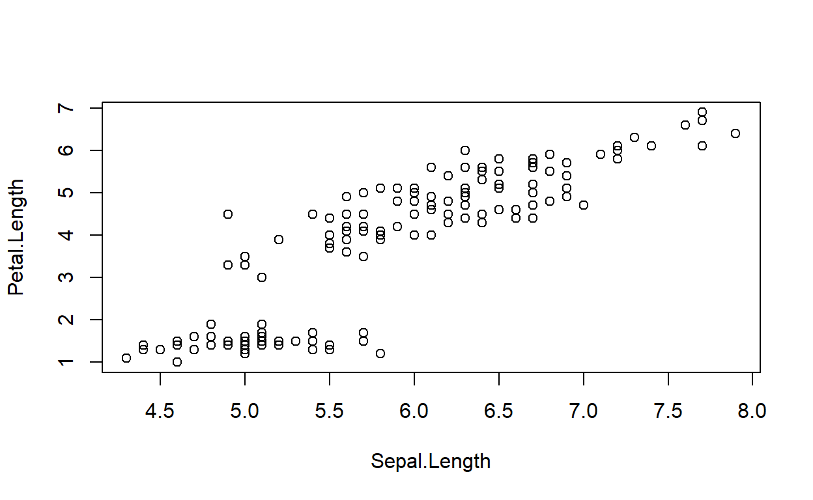

Let’s look at the relationship between the length of iris petals and the width of their sepals.
Here is the graph:

If we wanted to test whether there was a correlation between the length of iris petals and the width of their sepals, we need to formulate our hypotheses first or we won’t know what we are testing:
The structure of the correlation test function was covered in the lecture. Review it if you don’t remember then type in the formula we need for our correlation test below (case sensitive with appropriate spaces):
How would you describe the correlation? Refer to the lecture for appropriate descriptors.
What would happen if we reversed the correlation test formula? Try it.
Also try reversing the graph above so that sepal length is the response variable and petal length is the predictor variable.
That’s correlation!